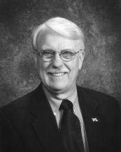

Please note: the AAS Obituaries are temporarily being hosted on this website while their full content is being ingested into the PubPub publishing platform newly adopted by the Bulletin of the American Astronomical Society. When the migration is complete, your existing links will take you to the final, migrated content. Contact peter.williams@aas.org with any questions.
Michael John Klein (1940-2005)
Michael John Klein died on 14 May 2005 at home in South Pasadena, California. The cause of death was tongue cancer that metastasized to the lungs. He was a non-smoker. Mike was a passionate radio astronomer, a trusted astronomical observer, an educator and a family man.
Mike was born on 19 January 1940 in Ames, Iowa, the son of Florence Marie (Graf) and Fred Michael Klein. His mother was a homemaker, and his father was a banker. Mike had two older sisters, Lois Jean (Klein) Flauher and Marilyn June (Klein) Griffin. In 1962, Mike married his high school sweetheart Barbara Dahlberg, who survives him along with their three children, Kristin Marie (Klein) Shields, Michael John Klein Jr., Timothy Joel Klein, and six grandchildren.
Mike developed a love for astronomy early in his life, and credited an early morning, newspaper-delivery route that he had at age twelve, which took him outside well before sunrise. He told family members that as he walked along his route, he stared into the sky and wondered what everything was. He studied sky charts, located stars, and began to understand how the planets shifted their positions relative to the stars each day.
Another big influence in Mike's life was his brother in-law, Jim Griffin. Jim helped Mike understand that his passion for science did not have to remain a hobby, but could and should become a career. Jim's encouragement led Mike to attend Iowa State University in Ames, where he earned a BS in electrical engineering in 1962. Mike then started graduate school in electrical engineering at Michigan State, but after one semester transferred to the University of Michigan, Ann Arbor, where he earned an MS (1966) and PhD (1968) in astronomy. His doctoral dissertation, under the direction of Professor Fred Haddock, was based on extensive observations of the planets and examined the physical and thermal properties of planetary atmospheres and surfaces.
Mike was awarded a Resident Research Associate position at JPL by the National Research Council in 1968. He joined JPL as a full time research scientist in 1969 where he remained until his death. He observed the radio emissions from Mercury, Jupiter, Uranus and other planets for over thirty-five years. Mike produced the most extensive set of observations of the synchrotron emission from Jupiter ever recorded. When JPL and the NASA Ames Research Center initiated a radio search for signs of extra-terrestrial intelligence (SETI) in the 1980s, Mike managed the JPL effort to scan the entire sky for signs of narrow band radio signals. He was open-minded about the possible existence of extra-terrestrial intelligent life.
Mike devoted much of his energy to education in the last fifteen years of his life. He felt that science created a pathway for learning and remarked that "students need science and science needs students." Using SETI as a vehicle for education, Mike co-authored a book, Cosmic Quest: Searching for Life Among the Stars (with Margaret Poynter) in order to promote public awareness of astronomy and exobiology. In the early 1990s, Mike became a leader and driving force in a collaborative educational effort involving JPL, NASA, the Lewis Center for Educational Research in Apple Valley, California, and the Apple Valley Unified School District. A 34-meter (110-foot) radio antenna at NASA's Deep Space Network's Goldstone Complex was converted into an interactive, research, and teaching instrument available to classrooms throughout the United States and military bases overseas via the Internet. Known as the Goldstone Apple Valley Radio Telescope (GAVRT), the project has been in operation for approximately ten years in fourteen countries and three territories. More than 15,000 students from kindergarten through twelfth grade have participated to date and the number is expected to grow to more 50,000 students in the next four years. As a tribute to Mike's leadership, the GAVRT instrument has been named the "Michael J. Klein Radio Telescope."
Mike was a member of the American Astronomical Society, the International Astronomical Union, the International Scientific Radio Union, and the American Institute for Aeronautics and Astronautics, for whom he was a Distinguished Lecturer in 1992 and 1993. He appeared on many television programs including CBS Nightwatch with Charlie Rose, ABC, NBC, and CNN News.
Mike achieved balance and perspective in his personal and professional life. He loved being a professional radio astronomer and shared his passion with family, friends, and students. He would take his children with him when he went on overnight observing trips to the desert. Mike was also active in his church where he taught Sunday school and held other positions. His family recalls how he always made time for them, be it for weeklong treks in the Sierra Nevada Mountains, sporting events, church outings, vacations, or nightly family dinners. He was completely present in multiple worlds. Mike's children still marvel at the ability he had to take any controversial topic and explore how opposing sides might merge their views, where others would have debated the correctness of one side or the other.
Mike was an inspiration to scientists and non-scientists alike. He set a high standard in his scientific work, and he shared his passion for life and the wonders of the universe.
Obituary written by: Samuel Gulkis (Jet Propulsion Loboratory and California Institute of Technology)
BAAS Citation: BAAS, 2006, 38, 1275
SAO/NASA ADS Bibcode: 2006BAAS...38.1275G